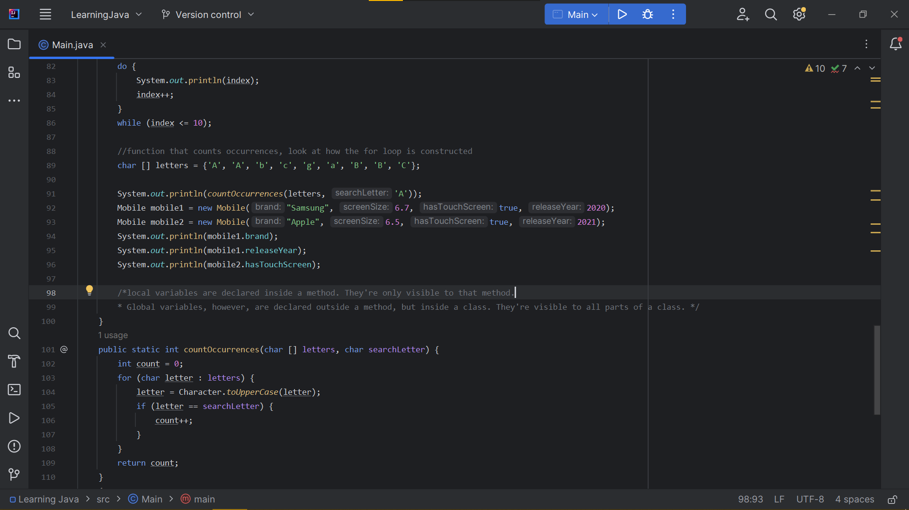
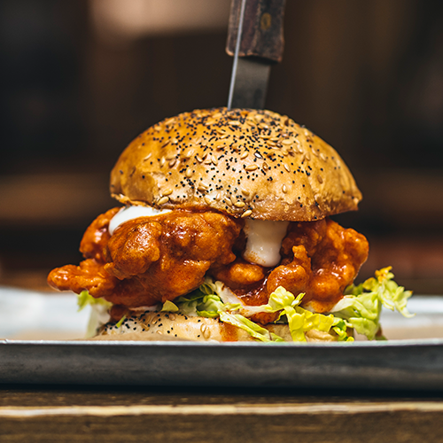
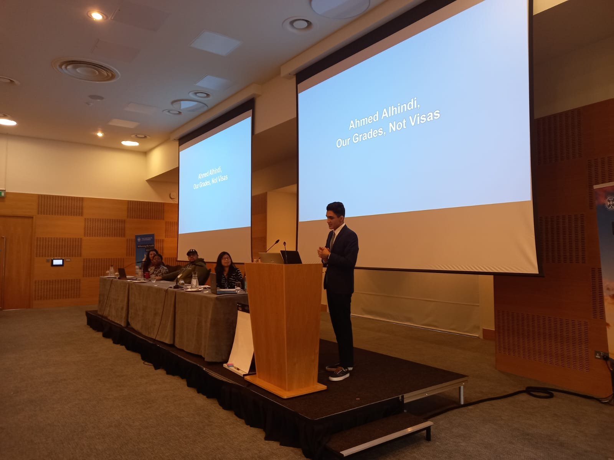

Who I Am:
"I am a full-time tech apprentice at Barclays based in Glasgow. I am learning mainly Java & Python for my back-end role."
"I am a part-time kitchen crew member at BrewDog. I make mouth-watering burgers and wings."
"I am also an activist for migrant students' right to higher education in Scotland. I am the founder of a national campaign called: 'Our Grades, Not Visas'. (Currently working on a website for it using Zyro, keep an eye out for that!). I was featured on the BBC & inews, I had a quick chat with STV News earlier this month, an article is getting published this week (hopefully!)."
"I rock-climb/play badminton every once in a while, but, given the fact that I have no pictures of myself while rock-climbing/playing badminton, you can probably tell how often I do either..."